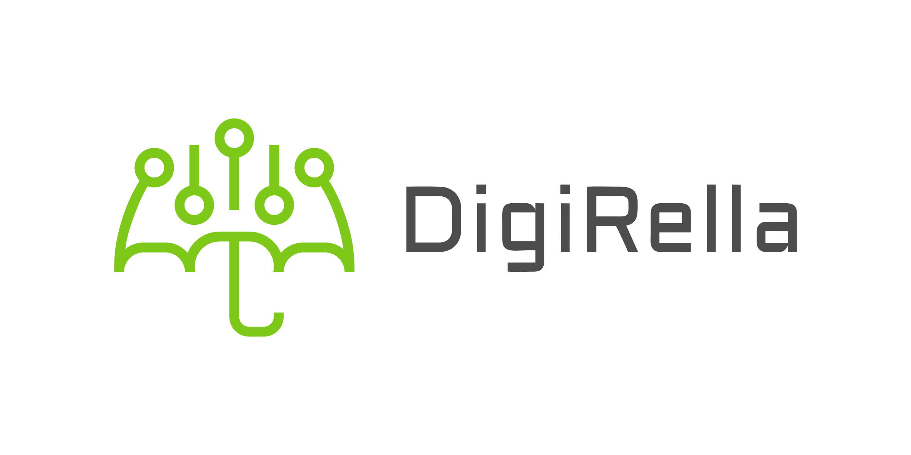

Alfalfa Fermer Asistenti
Ssenari seçimi, tövsiyələr və sadə chatbot.
1) Bağlantı və təsərrüfat tipi
API baza ünvanı: FastAPI işləyən host/port.
API
Bağlan
Sıfırla
Gözləmə rejimi.
2) Ssenari seçimi
Əvvəl təsərrüfat tipini seçin.
3) Günün nəticəsi
Təsərrüfat tipi: seçilməyib
Edilməli
Edilməməli
4) Chatbot
Qeyd: Chatbot hər sorğuda ssenari 1-i seçir.
Göndər
📖 Dokumentasiya
×